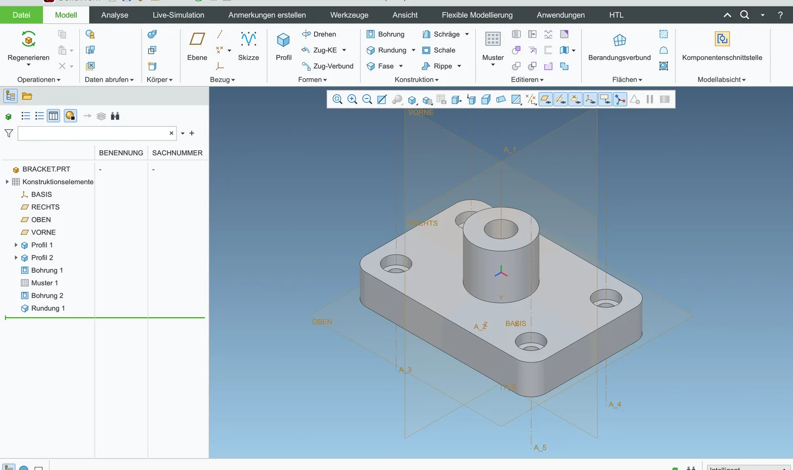

SolidWork.
From sketch to assembly.
A parametric CAD modeller for macOS, Windows, and Linux. Build parts from dimensioned sketches, fit them into assemblies, and generate drawings that update when the model changes.
SolidWork in use

01 / OVERVIEW
Made for the work.
SolidWork is written in Rust with its own geometry kernel, constraint solvers, and STEP reader.
Parts, assemblies, drawings
Model from dimensioned sketches, assemble parts, screws, and boards, and keep drawings associated with the model.
Simulation and manufacturing
Run structural, thermal, and flow simulation, slice for FDM printing, and prepare CNC milling.
Circuit boards
Draw schematics, route boards, check design rules, and export Gerber, drill, and KiCad files.
02 / DOWNLOADS
Get SolidWork.
Choose your operating system, then your processor and package.
macOS
Choose your processor
Apple silicon (ARM64)
Intel (x86_64)
Windows
Choose your processor
ARM64
x64 (x86_64)
x86 (32-bit)
Linux
Choose your processor
ARM64
x64 (x86_64)
Choose the package that matches your operating system and processor. Release notes and all downloads ↗
03 / MORE SOFTWARE